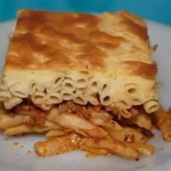

Pastitsio

A classic pastitsio recipe is usually a layered Greek casserole of macaroni and seasoned ground lamb, topped with a thick cream sauce. This version substitutes beef in place of lamb.
Prep Time: 45 mins
Cook Time: 1 hrs 10 mins
Additional Time: 2 hrs 15 mins
Total Time: 4 hrs 10 mins
Servings: 15
Ingredients
Meat Layer
- 1 tablespoon butter
- 1 onion, chopped
- 3 pounds lean ground beef
- ¾ cup water
- 1 (6 ounce) can tomato paste
- 2 tablespoons ground allspice
- 1 ½ teaspoons salt, or to taste
- 1 teaspoon ground nutmeg
- 1 teaspoon ground cinnamon
- ¼ teaspoon pepper
- 2 large eggs, beaten
Macaroni Layer
1 pound uncooked macaroni
2 large eggs, beaten
1 cup grated Parmesan cheese
½ cup butter, melted
Cream Sauce Layer
4 large eggs, well beaten
¾ cup half-and-half
1 cup grated Parmesan cheese
1 tablespoon all-purpose flour
½ teaspoon salt
ground nutmeg to taste
Directions
- Prepare the meat layer: Melt butter in a large skillet over medium-high heat. Stir in onion and cook until it begins to soften, about 3 minutes. Stir in ground beef and cook until crumbly and no longer pink. Pour in water and tomato paste. Season with allspice, salt, nutmeg, cinnamon, and pepper. Cover and simmer for 5 minutes. Remove from heat, adjust salt to taste, then refrigerate until cold. Once cold, remove any congealed fat, thoroughly mix with eggs, and set aside.
- Preheat the oven to 400 degrees F (200 degrees C).
- Prepare the macaroni layer: Bring a large pot of lightly salted water to a boil. Add macaroni and cook for 8 to 10 minutes or until al dente; drain and rinse under cold water to cool. Mix macaroni with eggs until well coated.
- Evenly spread 1/2 of the macaroni mixture into a 11x14x2-inch baking pan. Sprinkle with 1/2 of the grated Parmesan cheese and drizzle with 1/2 of the melted butter. Spread the meat mixture overtop, then finish with remaining macaroni. Sprinkle with remaining Parmesan cheese and melted butter.
- Make the cream sauce: Mix together eggs with half-and-half. Whisk in Parmesan cheese, flour, and salt until well blended.
- Pour the cream mixture evenly over top of the pastitsio and sprinkle with nutmeg.
- Cover the pan with foil and bake in the preheated oven for 15 minutes. Remove the foil and bake until the top has turned golden brown, about 30 minutes. Remove from oven and allow to stand for 15 minutes before serving.